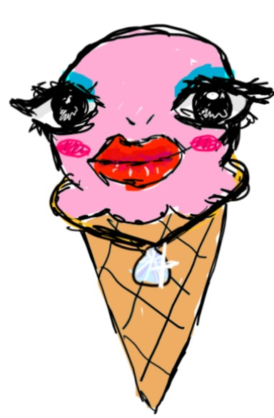

One of my favorite classes this tri is web class. In web class we have learned the basics of HTML, CSS, and Javascript. We have also followed along with demos from other teacher to learn python and make a magic eight ball website.
Another one of my favorite clases is science class. I like science in general and I also like doing labs.One of my favorite labs was when we nurned chemicals and got to see the different flame colors.
My third favorite class is spanish class because I get to sit next to my friends and sometimes we do activities like making a poster and play jeopordy. One the the PPTs my friend and I did has this:
